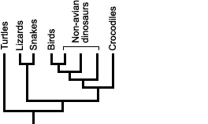
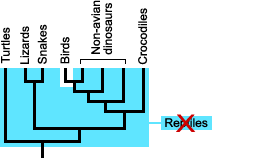

زیستشناسان درختهای فیلوژنتیکی را برای بسیاری از اهداف استفاده میکنند، برای مثال: - آزمایش فرضیات دربارهٔ فرگشت - اطلاع از ویژگیهای گونههای منقرض شده و نسبهای نیایی - ردهبندی جانداران
استفاده از فیلوژنیها به عنوان مبنای ردهبندیْ پیشرفتی نسبتاً جدید در زیستشناسی است. بیشترِ ما به «سیستم ردهبندی لینهای1» که یک سلسله2، شاخه3، رده4، راسته5، خانواده6، سرده7 و گونه8 را به هر جاندار نسبت میدهد عادت داریم، که میتوان آن را با عبارت King Philip Came Over For Good Soup راحتتر به خاطر سپرد. این سیستم بسیار پیش از اینکه دانشمندان متوجهِ فرگشت یافتنِ جانداران شوند ایجاد شده بود. از آنجا که سیستم لینهای بر اساس فرگشت نیست، بیشترِ زیستشناسان در حال رویآوردن به سیستمی هستند که منعکسکنندهٔ تاریخ فرگشتیِ جانداران باشد.
این سیستم ردهبندیِ فیلوژنتیکی فقط نام کلادها -گروهی از جانداران که همه از یک نیای مشترک نشأت گرفتهاند- را عنوان میکند. به عنوان مثال، میتوانیم به طور دقیقتر به خزندگان و پرندگان نگاهی بیاندازیم.

در یک سیستم ردهبندی فیلوژنتیکی، میتوانیم هر کدام از کلادهای روی درخت را نامگذاری کنیم. برای مثال، Testudines، Squamata، Archosauria و Crocodylomorpha هر کدام یک کلاد هستند.

اما، خزندگان یک کلاد را تشکیل نمیدهند، همانگونه که در کلادوگرام9 نشان داده شده. از این رو یا «خزنده» یک دستهبندی فیلوژنتیکیِ معتبر نیست یا از این به بعد باید پرندگان را به عنوان خزنده در نظر بگیریم.

یک نکتهٔ جالب دیگر این که از نظر ردهبندی فیلوژنتیکی دایناسورها کاملاً منقرض نشدهاند. پرندگان در واقع دایناسور هستند (عضوی از کلاد Dinosauria). خیلی جالب است، وقتی به این فکر میکنید که با مطالعهٔ پرندگان میتوانید در مورد تیرکس اطلاعات کسب کنید!